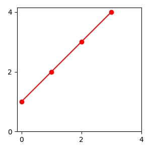
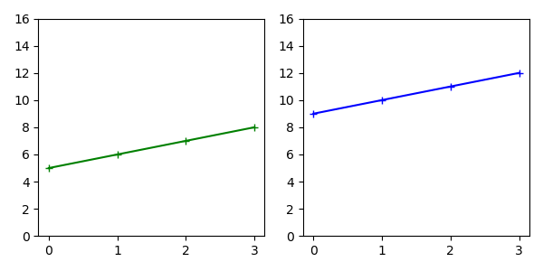
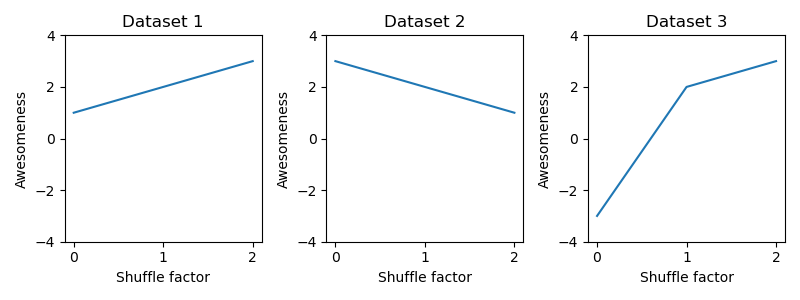
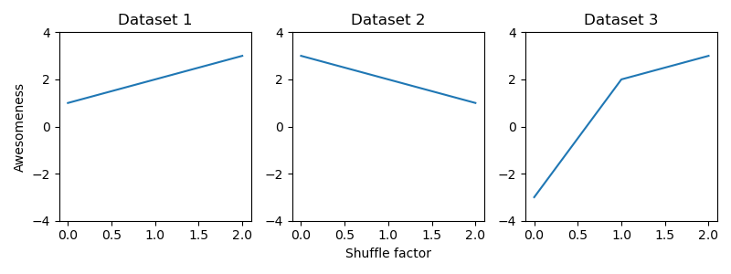
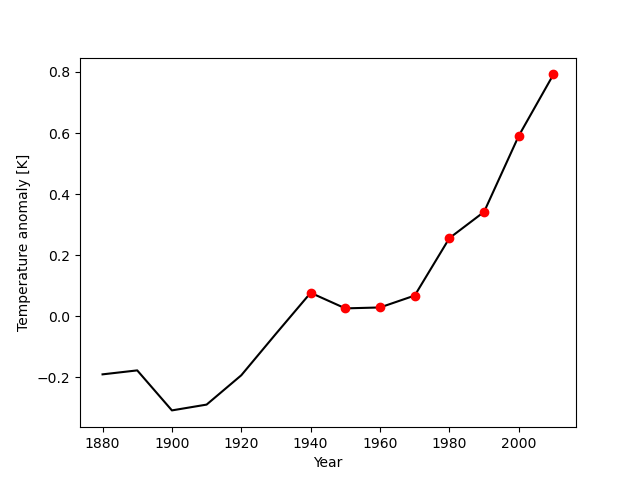

Loops (part 2)#
Exercise 1: Converting units#
Using range we can generate a sequence of numbers, with a specified start, end (non-inclusive) and step size: r = range(start, stop, step)
The output of range is not a list but something special - so we need to cast it to a list: r_as_list = list(r).
Let’s assume these numbers are angles, in radians.
Create a new list with the angles in degrees
Reminder: degrees = radians * 180 / pi
pi is approximately 3.14.
angles_radians = list(range(6))
print(angles_radians)
# your solution here
[0, 1, 2, 3, 4, 5]
Exercise 2: Lists of lists (1)#
You are given a list of lists called datasets. Each item in datasets is a list of 4 numbers, a single dataset:
datasets = [[1,2,3,4], [5,6,7,8], [9,10,11,12]]
First, familiarize your yourself with this slightly unusual form of data.
Print the length of
datasetsPrint the length of the first list in
datasets.Write a for loop that prints each list in this list:
[1,2,3,4]
[5,6,7,8]
[9,10,11,12]
datasets = [[1,2,3,4], [5,6,7,8], [9,10,11,12]]
# your solution here
Exercise 3: Lists of lists (2)#
Now plot the data in the list of lists in the following way:
Plot the first list of numbers in
datasetsas a red line with red dot as markers. Set the values of the x-ticks and y-ticks to 0, 2, 4.

Plot the second and third lists in
datasetsin side-by-side subplots as green and red lines, respectively. Have the y-axis start at 0 and end at 16 for both subplots.

data = [[1,2,3,4], [5,6,7,8], [9,10,11,12]]
# your solution here
Exercise 4: Lists of lists (3)#
You can combine for-loops and subplots to generate multi-panel plots.
You are given a variable, datasets, which is a list of lists. Each list in datasets contains a dataset composed of 3 values.
Use a for loop to plot all three datasets in three subplots:
All subplots should have the same y-limits.
All subplots should have an y-axis label “Awesomeness” and an x-axis label “Shuffle factor”.
Each subplot should have a title “Dataset #” where “#” is substituted by the number of the dataset (1,2,3).
Hint: While indices start at 0 in python, the number num of the subplot you want to plot into (plt.subplot(n_rows, n_cols, num)) starts at 1!
Roughly like so:

datasets = [[1,2,3], [3,2,1], [-3,2,3]]
# your solution here
Exercise 5: Lists of lists (4)#
This is nice, but there are too many redundant labels. Copy your code generating the figure from the cell above to the cell below and modify it in the following way:
Only the first subplot should have an y-axis label, “Awesomeness”.
Only the second (central) subplot should have an x-axis label “Shuffle factor”.
Roughly like so:

datasets = [[1,2,3], [3,2,1], [-3,2,3]]
# your solution here
Exercise 6: Nested for loops#
Compute products of all combinations of the numbers in the two lists A, B, like so:
[1*10, 1*20, 1*30, 2*10, 2*20, 2*30, 3*10, 3*20, 3*30, 4*10, 4*20, 4*30]
A = [1, 2, 3, 4]
B = [10, 20, 30]
# your solution here
[10, 20, 30, 20, 40, 60, 30, 60, 90, 40, 80, 120]
Exercise 7: Spike raster plot (Important)#
List of lists containing the spike times for different trials (stimulus presentations). Each item in this list is a list of spike times.
# IGNORE THIS CODE
import numpy as np
rng = np.random.default_rng(seed=1)
all_data = []
nb_trials = 20
for trial in range(nb_trials):
spike_data = np.cumsum(rng.gamma(10, 10, (50,)))
spike_data1 = spike_data[spike_data<2000]
spike_data = np.cumsum(rng.gamma(10, 5, (100,)))
spike_data2 = spike_data[spike_data<2000]
spike_data = np.cumsum(rng.gamma(10, 10, (50,)))
spike_data3 = spike_data[spike_data<2000]
spike_data = np.concatenate((spike_data1, spike_data2 + 2000, spike_data3 + 4000)) / 1_000
all_data.append(spike_data)
np.savez('spike_data.npz', *all_data)
all_data = np.load('spike_data.npz')
all_data = [list(spike_times) for spike_times in all_data.values()]
# EXECUTE BUT DO NOT CHANGE THIS CODE
import numpy as np
all_data = np.load('spike_data.npz')
all_data = [list(spike_times) for spike_times in all_data.values()]
# DO NOT CHANGE THE ABOVE CODE
# your solution here
Exercise 8: Combining for loops and if statements#
Make a plot that shows:
a black line connecting individual values (as before)
a red dot if the anomaly value is positive (you will need a for loop combined with an if statement for that)
Roughly like so:

temperature_anomalies = [-0.19,-0.177,-0.308,-0.289,-0.193,-0.057,0.077,0.026,0.029,0.068,0.256, 0.342, 0.591, 0.792]
print(temperature_anomalies)
years = [1880, 1890, 1900, 1910, 1920, 1930, 1940, 1950, 1960, 1970, 1980, 1990, 2000, 2010]
print(years)
# your solution
[-0.19, -0.177, -0.308, -0.289, -0.193, -0.057, 0.077, 0.026, 0.029, 0.068, 0.256, 0.342, 0.591, 0.792]
[1880, 1890, 1900, 1910, 1920, 1930, 1940, 1950, 1960, 1970, 1980, 1990, 2000, 2010]
0 1880 -0.19
1 1890 -0.177
2 1900 -0.308
3 1910 -0.289
4 1920 -0.193
5 1930 -0.057
6 1940 0.077
7 1950 0.026
8 1960 0.029
9 1970 0.068
10 1980 0.256
11 1990 0.342
12 2000 0.591
13 2010 0.792
Exercise 9: Keeping track of and updating results in a for loop#
Using for loops:
Determine the maximum value of the anomalies.
Determine the index of the maximum value.
Use the index of the maximum value to determine the year of the maximum value.
temperature_anomalies = [-0.19,-0.177,-0.308,-0.289,-0.193,-0.057,0.077,0.026,0.029,0.068,0.256, 0.342, 0.591, 0.792]
print(temperature_anomalies)
years = [1880, 1890, 1900, 1910, 1920, 1930, 1940, 1950, 1960, 1970, 1980, 1990, 2000, 2010]
print(years)
# your solutions here
[-0.19, -0.177, -0.308, -0.289, -0.193, -0.057, 0.077, 0.026, 0.029, 0.068, 0.256, 0.342, 0.591, 0.792]
[1880, 1890, 1900, 1910, 1920, 1930, 1940, 1950, 1960, 1970, 1980, 1990, 2000, 2010]
Exercise 10: Replace the loop variable#
The code below computes the area of square plots of land with side lengths given in the lengths list.
Change the name of the loop variable in the code below with a more meaningful one, for instance, length. Make sure that the code still produces the correct result.
# change this code
lengths = [1, 2, 4, 8, 10]
areas = []
for x in lengths:
x = x ** 2
areas.append(x)
areas
[1, 4, 16, 64, 100]
Exercise 11: Compute the square of all numbers between 0 and 100#
Plot the result.
# your solution here
Exercise 12: Compute the function y = 10 * x - 2 for 100 x values between -10 and 10#
Plot the result
# your solution here